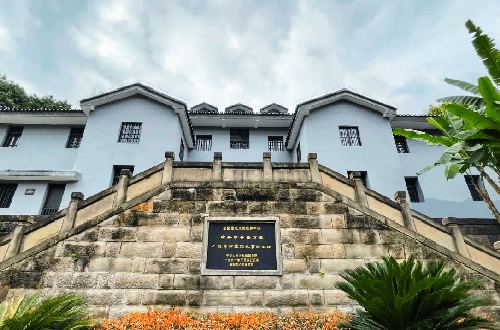
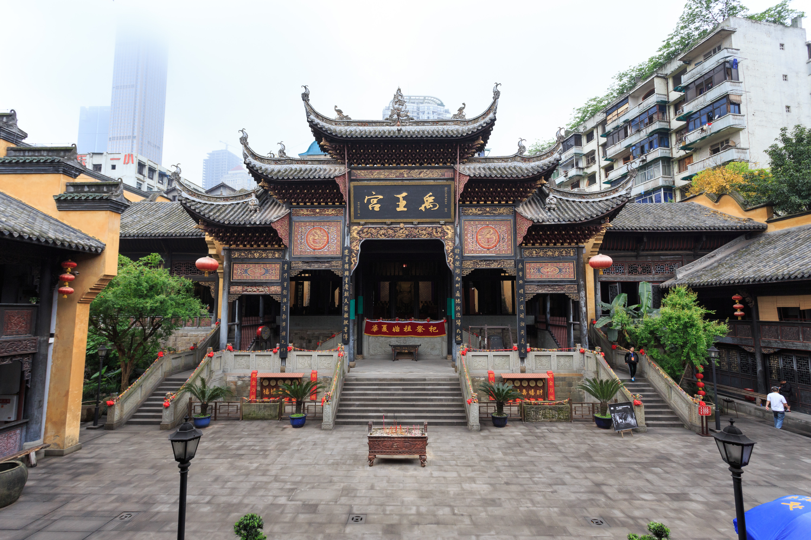

Top 3 Historic Sites in Chongqing
Hongyan Village Revolutionary Base

Introduction
Hongyan Village, on the banks of the Jialing River, is a WWII-era revolutionary base where the Communist Party of China led anti-Japanese activities in the 1930s–1940s. The site covers 50,000 square meters and includes 12 historic buildings: the “Hongyan Rectory” (where leaders lived), the “Yangtze Hostel” (a secret meeting place), and the “Exhibition Hall” (with photos, documents, and personal items of revolutionaries). The buildings are preserved in their original style—simple wooden structures with tile roofs, surrounded by banyan trees. It’s a solemn but educational spot, telling the story of Chongqing’s role in China’s modern history. Guided tours are available to explain the site’s significance.
Best Time to Visit
Morning (9:00 AM–11:00 AM): Quiet; good for listening to guided tour explanations.
Year-round: Indoor-outdoor layout; comfortable in all seasons (avoid rainy afternoons).
Price
Entry Fee:Free (requires ID registration at the entrance).
Guided Tour (1 hour): 30 CNY/group (available in Chinese and English).
Souvenir Shop: 10–50 CNY for books or replicas of historic items.
Liberation Monument (Jiefangbei)

Introduction
Liberation Monument, in downtown Chongqing, is a 27.5-meter-tall stone monument built in 1940 (originally to honor Chinese soldiers in WWII) and renamed in 1949 to mark Chongqing’s liberation. Today, it’s the center of Chongqing’s busiest commercial area—surrounded by skyscrapers, shopping malls, and street food stalls—but the monument itself remains a historic landmark. The base of the monument has inscriptions detailing its history, and the top offers a small viewing platform (accessible by stairs) with views of the surrounding neon-lit streets. At night, the monument is illuminated by lights, making it a popular spot for photos and gatherings. It’s a symbol of Chongqing’s past and present, blending history with modern city life.
Best Time to Visit
Evening (7:00 PM–9:00 PM): Monument is lit up; lively atmosphere with street performers and food stalls.
National Day (October 1st): Decorated with red flags; special events (e.g., folk dances).
Price
Entry Fee:Free (monument grounds are open to the public).
Viewing Platform (Top of Monument): 5 CNY/adult; free for kids under 1.2m.
Huguang Guild Hall

Introduction
Huguang Guild Hall, on the banks of the Yangtze River, is a 300-year-old complex of traditional Chinese halls built in the Qing Dynasty (1636–1912) for merchants from Hubei, Hunan, Guangdong, and Guangxi provinces. Covering 8,500 square meters, it’s one of China’s largest and best-preserved guild hall complexes, with 10 main buildings: the “Great Hall” (for meetings), the “Stage” (for traditional opera), and the “Ancestral Hall” (for honoring merchant ancestors). The architecture is a mix of Sichuan and southern Chinese styles—intricate wood carvings, colorful ceramic roof tiles, and courtyard gardens. Today, you can watch Sichuan opera performances on the ancient stage, admire the carvings of mythical creatures, and learn about Chongqing’s maritime trade history in the exhibition hall.
Best Time to Visit
Afternoon (2:00 PM–4:00 PM): Good light for photos of carvings and courtyards; opera performances (3:00 PM daily).
Spring (April–May): Courtyard flowers bloom; mild weather.
Price
Entry Fee:25 CNY/adult; 12 CNY/students; free for kids under 1.2m.
Sichuan Opera Performance: 80 CNY/adult (1-hour show, includes face-changing and fire-spitting acts).
Audio Guide: 20 CNY/rental (available in Chinese, English, and Japanese).